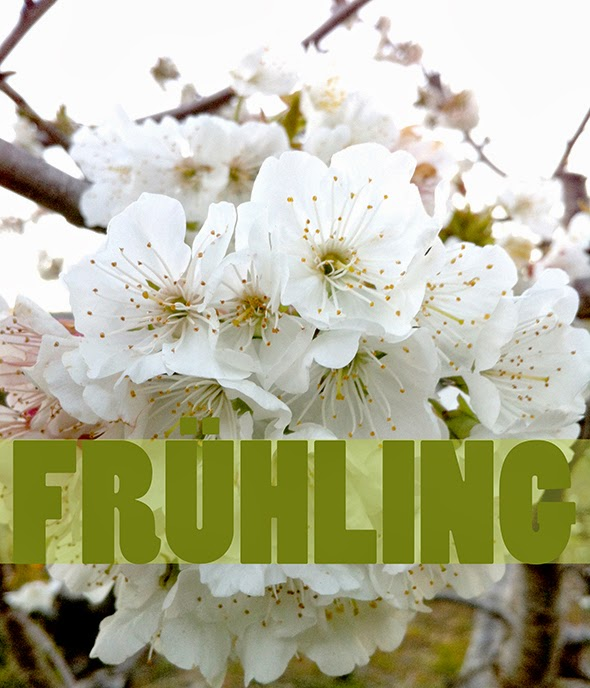

Zwei Styroporkugeln, ein Papierstreifen und ein bisschen Watte. Man kann sie natürlich ein wenig mehr dekorieren.

Zwei Styroporkugeln, ein Papierstreifen und ein bisschen Watte. Man kann sie natürlich ein wenig mehr dekorieren.

Was kann man zu Ostern mit den Loom Bands machen? Wir haben sie um Eier gewickelt, bevor wir diese gefärbt haben. Danach einfach entfernen.
Weiterlesen →


Zum Valentinstag haben Hannah und Noah Herzen genäht ( Vorlage ). Weil die Tischdeckchen aus so dünnem Papier sind, haben wir Karton auf die Rückseite geklebt.
Weiterlesen →